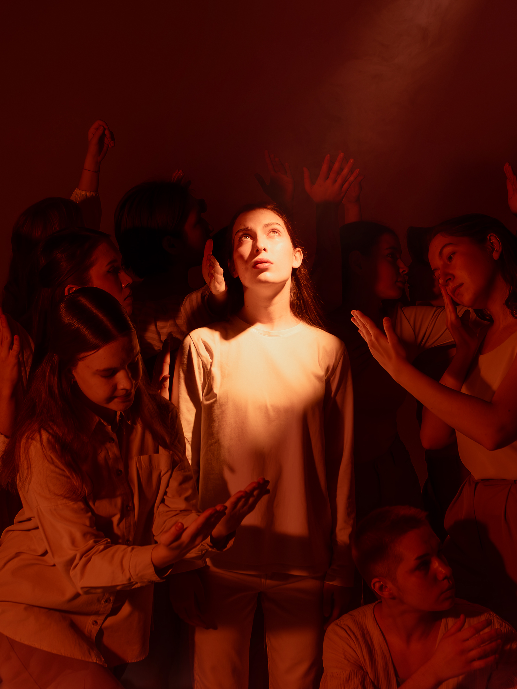

«На ощупь» — это пластический спектакль о том, как двигаться, когда пути не видно
Быть студентом — это когда многое впервые. Наш спектакль — это история о студенчестве как о большом переходе. Из одного города в другой. Из детства во взрослую жизнь. Из представлений о себе и мире — в реальность, которая часто оказывается сложнее и интереснее любых ожиданий.
Это постановка в стиле Contemporary, которая говорит на языке танца о том, что порой тяжело сказать вслух. Это история как напоминание, что даже в неуверенности и тревоге мы не одиноки. Можно идти на ощупь — без плана, без гарантий, но с желанием двигаться дальше.
На премьере в ВШЭ люди приходили, смотрели, оставались после спектакля и говорили, что узнали себя на сцене. Это не просто театр — это точка, где студенты чувствуют, что они не одни в своих сомнениях.
Мы готовы привезти это в ваш университет и создать пространство для доверительного, безопасного и комфортного диалога со студентами.
В апреле 2026 года состоялась премьера спектакля на сцене Культурного центра ВШЭ. Пришли 300+ человек из 25+ факультетов. После спектакля люди не уходили — оставались на получасовую дискуссию с командой спектакля и задавали вопросы, делились своим опытом, плакали, смеялись.
Мы провели четыре открытых мастер-класса, встречи с психологами, рефлексивные круги. 70 человек записались на дополнительные события. Люди приходили повторно, потому что это действительно было про них — про их жизнь, их сомнения, их смелость.
Спектакль полностью готов. Режиссёр, хореографы, исполнители — люди, которые уже делали это и знают, как работать с аудиторией.
Мы остаёмся и говорим со зрителями. На премьере это мероприятие получило очень сильный отклик.
Эта история про них. Про выбор, неуверенность, адаптацию. На премьере было 300+ человек с разных факультетов. Показатель того, что это работает.
Сценическая площадка, пара дней на подготовку, базовое техоснащение. Мы не усложняем, мы приносим готовый результат.
Проект реализован студентами НИУ ВШЭ. Люди, которые сами прошли через студенческую адаптацию, выбор, сомнения. В нашей команде студенты самых разных факультетов ВШЭ (инженеры, биологи, математики, дизайнеры, экономисты, лингвисты и многие другие!) и разных возрастов - от первого курса до магистров и выпускников.
Режиссёр и хореограф: Елизавета Пивоева — физик, который нашел способ говорить с людьми через танец. Артистка театральной компании RADI SVETA, педагог-хореограф в HSE Dance на протяжении 3 лет. Студентка 4 курса бакалавриата "Физика" НИУ ВШЭ.
Хореограф, помощник режиссёра: Диана Ефимова — психолог, которая понимает невербальный язык эмоций. Артистка творческого объединения "Звон", педагог-хореограф в HSE Dance на протяжении 2 лет. Студентка 4 курса бакалавриата "Психология" НИУ ВШЭ.
Проект развивается при поддержке HSE Dance — крупнейшей студенческой танцевальной организации России.

Напишите нам, и мы обсудим детали. Это займет 15 минут, и вы поймете, подходит ли проект для ваших студентов.
Режиссёр спектакля: Елизавета Пивоева
Email: eipivoeva@edu.hse.ru💡 Совет: нажмите Ctrl+P (или Cmd+P на Mac), чтобы скачать медиакит как PDF
© 2026 Проект «На ощупь»
HSE Dance, НИУ ВШЭ
Культурный проект для студентов, которые ищут себя.